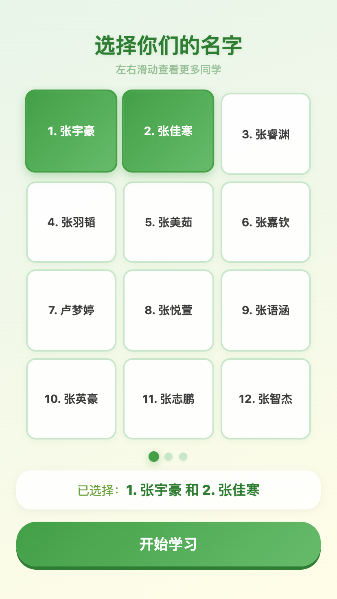
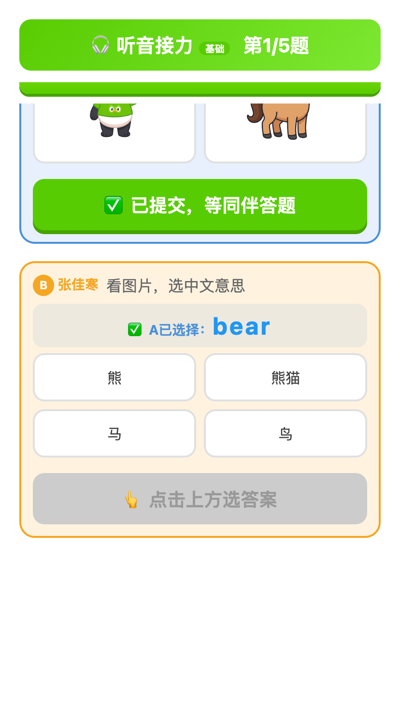
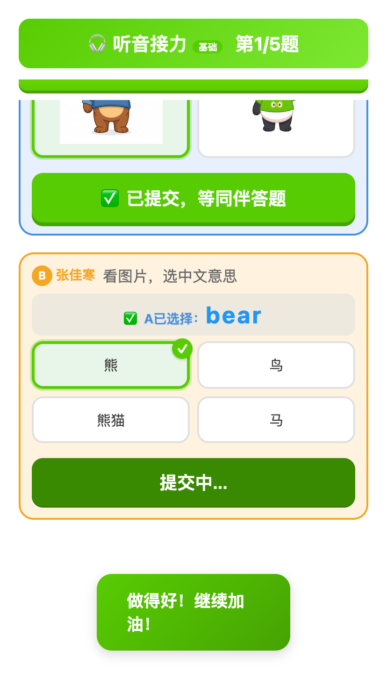
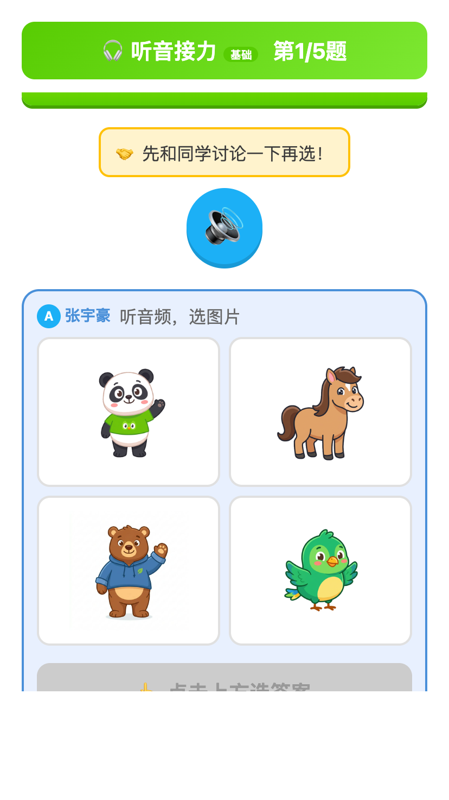
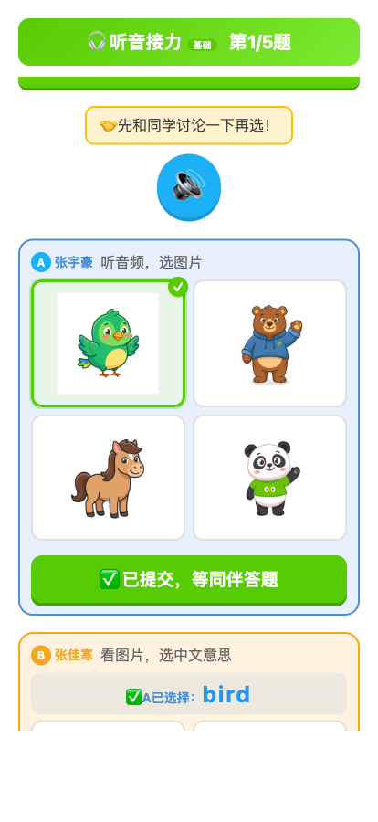
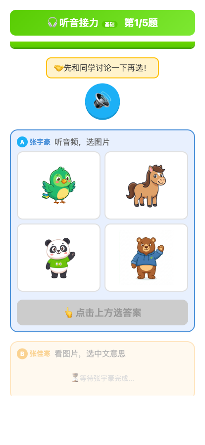

| Theory | Phase 1SetupTeacher config + pairing | Phase 2InteractionStudent A + Student B | Phase 3SupportScaffolding L1–L4 | Phase 4FeedbackMastery + adaptation |
|---|---|---|---|---|
| SC Vygotsky, 1978 |
Primary
 Cooperative structure set Teacher activates lesson; app enforces A/B pairing on shared device — cooperation built into the structure |
Primary Sequential dependency A’s result → B; neither can complete alone. B’s task activates only after A submits. |
Secondary
 Peer as first resource — L1 scaffold triggers cooperative discussion before system help |
Secondary
 Shared outcome — both A and B must answer correctly to advance; success is co-constructed |
| SLA Krashen; Long; Swain | — |
Primary
 Input + interaction Audio at i+1 level (Krashen); A/B split necessitates negotiation of meaning (Long); B must produce a response based on A’s result — pushed output reveals gaps (Swain) |
Secondary Modified input via scaffold — L2 slow replay and L3 Chinese hint operationalize SLA principles |
Primary
 Adaptive i+1 progression
Previously wrong questions must be re-answered. Correct → harder; wrong → easier.
Adaptive i+1 progression
Previously wrong questions must be re-answered. Correct → harder; wrong → easier.
|
| CLT Sweller, 1988 | Primary Extraneous load removed Teacher pre-selects lesson & module; students make zero navigation decisions |
Primary
 Task distribution A: audio + images only, no text. B: text + meaning only, no audio. Each learner’s cognitive load halved through modality split. |
Secondary Germane load — scaffold hints aid schema formation without adding extraneous load |
Secondary
Intrinsic load adjusted — adaptive difficulty maintains load within manageable range
|
| ZPD Vygotsky; Wood et al., 1976 (inherent SC mechanism) | — | Secondary Task calibrated within ZPD; scaffolds on standby — hint bags available if needed | Primary Contingent scaffolding L1 peer → L2 slow replay → L3 Chinese hint → L4 multimodal. Progressive, contingent, fades on success. | Primary ZPD recalibration Algorithm adjusts next station difficulty based on scaffold usage and accuracy. |
| SE Bandura, 1977 | — |
Primary
 Vicarious experience B watches A perform on shared screen — Bandura’s 2nd strongest SE source. “A peer like me can do it” builds efficacy belief. |
Primary Failure protection Scaffold prevents repeated failure; “That’s OK, try again!” preserves self-efficacy. | Primary Mastery experience 100% + trophy = genuine mastery (Bandura). A ↔ B swap = both experience success as “doer.” |
| — |
TTS audio delivery Adaptive question selection |
L2–L4 scaffold logic AI-driven hint triggers |
Adaptive algorithm i+1 difficulty adjustment |
Theory Integration Points — One Design Decision, Multiple Theories
Note. This matrix maps the activation of five micro-level theories from the conceptual framework (Figure 1) across four phases of one cooperative question (~30 seconds). The sixth theory, 3P (Play → Problem → Project), operates at the station/unit level: it determines the type of activity before the interaction cycle begins, and the five theories below operate within each 3P level. The exemplar is coop_listen_relay (Listening Module, Station 1, Play level): two students share one iPhone; Student A and Student B take sequential turns on the same screen.
Activation levels. Primary = the theory is a main design driver, with concrete design behaviors directly embodying it. Secondary = indirectly present or on standby (e.g., scaffolds available but not yet triggered). Inactive = no observable design behavior implements this theory. Phase 1 (Setup) is a pre-task configuration phase; learning theories naturally activate once interaction begins in Phase 2.
SC = Social Constructivism (Vygotsky, 1978) — the epistemological foundation of this framework; SLA = Second Language Acquisition (Krashen, 1985; Long, 1996; Swain, 1985); 3P = Play / Problem / Project-based Learning (synthesized in this study); CLT = Cognitive Load Theory (Sweller, 1988); ZPD = Zone of Proximal Development + Scaffolding (Vygotsky, 1978; Wood et al., 1976) — an inherent mechanism within SC, separated here for analytical clarity; SE = Self-efficacy (Bandura, 1977). Scaffolding: L1 Peer negotiation → L2 Modified input (slow replay) → L3 Linguistic cue (Chinese hint) → L4 Multimodal support. Contingent, progressive, fades on success.